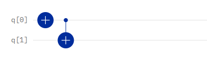
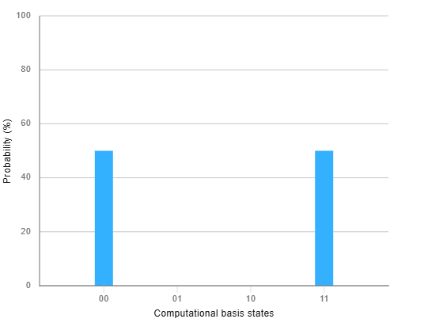

The "Spooky Action at a Distance"
Time: 60 min Prerequisites: QC05, Lab 1In Lab 1, we manipulated individual qubits. In this laboratory, we explore systems of multiple qubits and the phenomenon of Entanglement. As stated in Lesson QC05, the real power of quantum computation appears when we start combining qubits together.
Qiskit uses "Little Endian" ordering. This means the rightmost bit in a string represents qubit 0 ($q_0$).
State |10⟩ &implies; q1 = 1, q0 = 0
Always pay attention to which qubit is the Control and which is the Target when reading results!
CNOT |00⟩ → |00⟩CNOT |10⟩ → |11⟩
Expected Effect: The state becomes $|11\rangle$ (Probability 100% on "11"). The target flipped because the control was 1.

The CNOT gate in action.

2025 Industry Perspective
Entanglement is the key resource for quantum advantage.
We will now write the Python code to generate these states.
Open the Jupyter Notebook to run the "Hello World" of quantum computing and test the fragility
of multi-qubit systems.
You will implement the exact circuit from Exercise 2 in Python:
qc = QuantumCircuit(2, 2)
qc.h(0)
qc.cx(0, 1)
qc.measure([0, 1], [0, 1])Run this 1000 times to verify the 50/50 split between '00' and '11'.
We expand to 3 qubits to create the GHZ State:
$$ |GHZ\rangle = \frac{|000\rangle + |111\rangle}{\sqrt{2}} $$If the control qubit is in state $|0\rangle$ and the target qubit is in state $|1\rangle$, what does the CNOT gate do?
You have created the Bell State $\frac{|00\rangle + |11\rangle}{\sqrt{2}}$. You measure the first qubit and get the result "1". What is the state of the second qubit immediately after?
Based on the concept of decoherence mentioned in Exercise 4, why is a 3-qubit GHZ state harder to maintain than a single qubit?